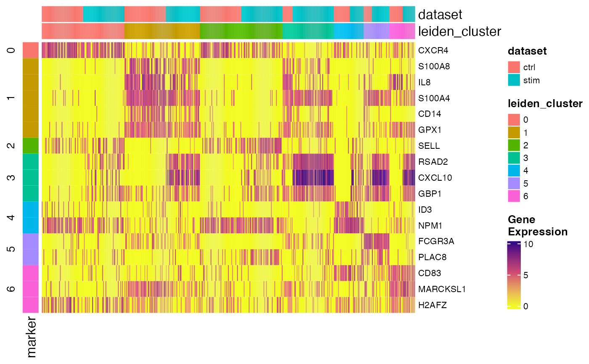

R/DEG_marker.R
plotMarkerHeatmap.RdCreate heatmap for showing top marker expression in conditions
A liger object, with normalized data and metadata to annotate available.
The data.frame returned by runMarkerDEG.
Number of top features to be plot for each group. Default
5.
Hard threshold on logFC value. Default 1.
Hard threshold on adjusted P-value. Default 0.05.
Threshold on expression percentage. These
mean that a feature will only pass the filter if it is expressed in more than
pctInThresh percent of cells in the corresponding cluster. Similarly
for pctOutThresh. Default 50 and 50, respectively.
When ranking by padj and logFC and a feature is ranked as top
for multiple clusters, assign this feature as the marker of a cluster when
it has the largest "logFC" in the cluster or has the lowest
"padj". Default "logFC".
Cell metadata variable names for cell grouping. Downsample
balancing will also be aware of this. Default c("dataset",
"leiden_cluster").
Maximum number of cells in each group to be downsampled for
plotting. Default 50.
Title on the column. Default NULL.
Parameter passed to wrapped functions in the inheritance order:
plotGeneHeatmap, .plotHeatmap,
ComplexHeatmap::Heatmap
markerTable <- runMarkerDEG(pbmcPlot)
plotMarkerHeatmap(pbmcPlot, markerTable)
#> Mon Dec 11 16:11:13 2023 ... Subsetting dataset: ctrl
#> Mon Dec 11 16:11:13 2023 ... Subsetting dataset: stim
